#!/usr/bin/env bash
#
# Run fastp on the raw fastq files
#
# ----------------------------------------------------------------------------
set -Eeou pipefail
FQ=/path/to/00_fastq # Directory containing raw fastq files
SAMPLES=sample-names.txt # A text file listing basenames of fastq files
OUT=/path/to/put/01_fastp # Where to save the fastp results
THREADS=8
mkdir -p $OUT
for SAMPLE in $(cat $SAMPLES)
do
fastp -i $FQ/${SAMPLE}_R1.fq.gz \
-I $FQ/${SAMPLE}_R2.fq.gz \
-o $OUT/${SAMPLE}.trimmed.1.fq.gz \
-O $OUT/${SAMPLE}.trimmed.2.fq.gz \
-h $OUT/${SAMPLE}.fastp.html \
-j $OUT/${SAMPLE}.fastp.json \
--detect_adapter_for_pe \
-w $THREADS
doneDifferential Expression Analysis
This vignette outlines some common steps for RNA-seq analysis highlighting functions present in the coriell package. To illustrate some of the analysis steps I will borrow examples and data from the rnaseqGene and RNAseq123 Bioconductor workflows. Please check out the above workflows for more details regarding RNA-seq analysis.
This vignette contains my opinionated notes on performing RNA-seq analyses. I try to closely follow best practices from package authors but if any information is out of date or incorrect, please let me know.
Overview
Differential gene expression analysis using RNA-seq typically consists of several steps:
- Quality control of the fastq files with a tool like FastQC or fastp
- Alignment of fastq files to a reference genome using a splice-aware aligner like STAR or transcript quantification using a pseudoaligner like Salmon.
- If using a genome aligner, read counting with Rsubread::featureCounts or HTSeq count to generate gene counts. If using a transcript aligner, importing gene-level counts using the appropriate offsets with tximport or tximeta
- Quality control plots of the count level data including PCA, heatmaps, relative-log expression boxplots, density plots of count distributions, and parallel coordinate plots of libraries. Additionally, check the assumptions of global scaling normalization.
- Differential expression testing on the raw counts using edgeR, DESeq2, baySeq, or limma::voom
- Creation of results plots such as volcano or MA plots.
- Gene ontology analysis of interesting genes.
- Gene set enrichment analysis.
Quality Control
fastp has quickly become my favorite tool for QC’ing fastq files primarily because it is fast and produces nice looking output files that are also amenable to summarization with MultiQC. fastp can also perform adapter trimming on paired-end reads. I tend to fall in the camp that believes read quality trimming is not necessary for RNA-seq alignment. However, I have never experienced worse results after using the adapter trimming with fastp so I leave it be and just inspect the output carefully.
A simple bash script for running fastp over a set of fastq files might look something like this:
Where sample-names.txt is a simple text file with each basename like so:
Control1
Control2
Control3
Treatment1
Treatment2
Treatment3It is important to name the results files with *.fastp.{json|html} so that multiqc can recognize the extensions and combine the results automatically.
Alignment and Quantification
Salmon
I tend to perform quantification with Salmon to obtain transcript-level counts for each sample. A simple bash script for performing quantification with Salmon looks like:
#!/usr/bin/env bash
#
# Perform transcript quantification with Salmon
#
# ----------------------------------------------------------------------------
set -Eeou pipefail
SAMPLES=sample-names.txt # Same sample-names.txt file as above
IDX=/path/to/salmon-idx # Index used by Salmon
FQ=/path/to/01_fastp # Directory containing the fastp output
OUT=/path/to/02_quants # Where to save the Salmon results
THREADS=12
mkdir -p $OUT
for SAMPLE in $(cat $SAMPLES)
do
salmon quant \
-i $IDX \
-l A \
-1 $FQ/${SAMPLE}.trimmed.1.fq.gz \
-2 $FQ/${SAMPLE}.trimmed.2.fq.gz \
--gcBias \
--seqBias \
--threads $THREADS \
-o $OUT/${SAMPLE}_quants
doneI tend to always use the --gcBias and --seqBias flags as they don’t impair accuracy in the absence of biases (quantification just takes a little longer).
STAR
Sometimes I also need to produce genomic coordinates for alignments. For this purpose I tend to use STAR to generate BAM files as well as produce gene-level counts with it’s inbuilt HTSeq-count functionality. A simple bash script for running STAR might look like:
#!/usr/bin/env bash
#
# Align reads with STAR
#
# ----------------------------------------------------------------------------
set -Eeou pipefail
SAMPLES=sample-names.txt # Same sample-names.txt file as above
FQ=/path/to/01_fastp # Directory containing the fastp output
OUT=/path/to/03_STAR_outs # Where to save the STAR results
IDX=/path/to/STAR-idx # Index used by STAR for alignment
THREADS=24
mkdir -p $OUT
for SAMPLE in $(cat $SAMPLES)
do
STAR --runThreadN $THREADS \
--genomeDir $IDX \
--readFilesIn ${FQ}/${SAMPLE}.trimmed.1.fq.gz ${FQ}/${SAMPLE}.trimmed.2.fq.gz \
--readFilesCommand zcat \
--outFilterType BySJout \
--outFileNamePrefix ${OUT}/${SAMPLE}_ \
--alignSJoverhangMin 8 \
--alignSJDBoverhangMin 1 \
--outFilterMismatchNmax 999 \
--outFilterMismatchNoverReadLmax 0.04 \
--alignIntronMin 20 \
--alignIntronMax 1000000 \
--alignMatesGapMax 1000000 \
--outMultimapperOrder Random \
--outSAMtype BAM SortedByCoordinate \
--quantMode GeneCounts;
doneFor STAR I tend to use the ENCODE default parameters above for human samples and also output gene level counts using the --quantMode GeneCounts flag.
Generating a matrix of gene counts
The recommended methods for performing differential expression analysis implemented in edgeR, DESeq2, baySeq, and limma::voom all require raw count matrices as input data.
Importing transcript-level counts from Salmon
We use R to import the quant files into the active session. tximeta will download the appropriate metadata for the reference genome used and import the results as a SummarizedExperiment object. Check out the tutorial for working with SummarizedExperiment objects if you are unfamiliar with their structure.
The code below will create a data.frame mapping sample names to file paths containing quantification results. This data.frame is then used by tximeta to import Salmon quantification results at the transcript level (along with transcript annotations). Then, we use summarizeToGene() to summarize the tx counts to the gene level. Finally, we transform the SummarizedExperiment object to a DGEList for use in downstream analysis with edgeR
library(tximeta)
library(edgeR)
quant_files <- list.files(
path = "02_quants",
pattern = "quant.sf",
full.names = TRUE,
recursive = TRUE
)
# Extract samples names from filepaths
names(quant_files) <- gsub("02_quants", "", quant_files, fixed = TRUE)
names(quant_files) <- gsub("_quants/quant.sf", "", names(quant_files), fixed = TRUE)
# Create metadata for import
coldata <- data.frame(
names = names(quant_files),
files = quant_files,
group = factor(rep(c("Control", "Treatment"), each = 3))
)
# Import transcript counts with tximeta
se <- tximeta(coldata)
# Summarize tx counts to the gene-level
gse <- summarizeToGene(se, countsFromAbundance = "scaledTPM")
# Import into edgeR for downstream analysis
y <- SE2DGEList(gse)Importing gene counts from STAR
If you used STAR to generate counts with HTSeq-count then edgeR can directly import the results for downstream analysis like so:
library(edgeR)
# Specify the filepaths to gene counts from STAR
count_files <- list.files(
path = "03_STAR_outs",
pattern = "*.ReadsPerGene.out.tab",
full.names = TRUE
)
# Name the file with their sample names
names(count_files) <- gsub(".ReadsPerGene.out.tab", "", basename(count_files))
# Import HTSeq counts into a DGEList
y <- readDGE(
files = count_files,
columns = c(1, 2), # Gene name and 'unstranded' count columns
group = factor(rep(c("Control", "Treatment"), each = 3)),
labels = names(count_files)
)Counting reads with featureCounts()
Another (preferred) option for generating counts from BAM files is to use the function featureCounts() from the Rsubread R package. featureCounts() is very fast and has many options to control exactly how reads are counted. featureCounts() is also very general. For example, you can use featureCounts() to count reads over exons, introns, or arbitrary genomic ranges - it’s a very useful tool.
featureCounts() can use an inbuilt annotation or take a user supplied GTF file to count reads over. The inbuilt annotation (NCBI RefSeq) works particularly well with downstream functions implemented in edgeR. See ?Rsubread::featureCounts() for more information about using your own GTF file.
The resulting object can also be easily coerced to a DGEList for downstream analysis.
library(Rsubread)
# Specify the path to the BAM files produced by STAR
bam_files <- list.files(
path = "path/to/bam_files",
pattern = "*.bam$",
full.names = TRUE
)
# Optionally name the bam files
names(bam_files) <- gsub(".bam", "", basename(bam_files))
# Count reads over genes for a paired-end library
fc <- featureCounts(
files = bam_files,
annot.inbuilt = "hg38",
isPairedEnd = TRUE,
nThreads = 12
)
# Coerce to DGEList for downstream analysis
y <- edgeR::featureCounts2DGEList(fc)Test data
We will use data from the airway package to illustrate differential expression analysis steps. Please see Section 2 of the rnaseqGene workflow for more information.
Below, we load the data from the airway package and use SE2DGEList to convert the object to a DGElist for use with edgeR.
library(airway)
library(edgeR)
# Load the SummarizedExperiment object
data(airway)
# Set the group levels
airway$group <- factor(airway$dex, levels = c("untrt", "trt"))
# Convert to a DGEList to be consistent with above steps
y <- SE2DGEList(airway)Library QC
Before we perform differential expression analysis it is important to explore the samples’ library distributions to ensure good quality before downstream analysis. There are several diagnostic plots we can use for this purpose implemented in the coriell package. However, first we must remove any features that have too low of counts for meaningful differential expression analysis. This can be achieved using edgeR::filterByExpr().
# Determine which genes have enough counts to keep around
keep <- filterByExpr(y)
# Remove the unexpressed genes
y <- y[keep,,keep.lib.sizes = FALSE]At this stage it is often wise to perform library QC on the library size normalized counts. This will give us an idea about potential global expression differences and potential outliers before introducing normalization factors. We can use edgeR to generate log2 counts-per-million values for the retained genes.
logcounts <- cpm(y, log = TRUE)Relative log-expression boxplots
The first diagnostic plot we can look at is a plot of the relative log expression values. RLE plots are good diagnostic tools for evaluating unwanted variation in libraries.
library(ggplot2)
library(coriell)
plot_boxplot(logcounts, metadata = y$samples, fillBy = "group",
rle = TRUE, outliers = FALSE) +
labs(title = "Relative Log Expression",
x = NULL,
y = "RLE",
color = "Treatment Group")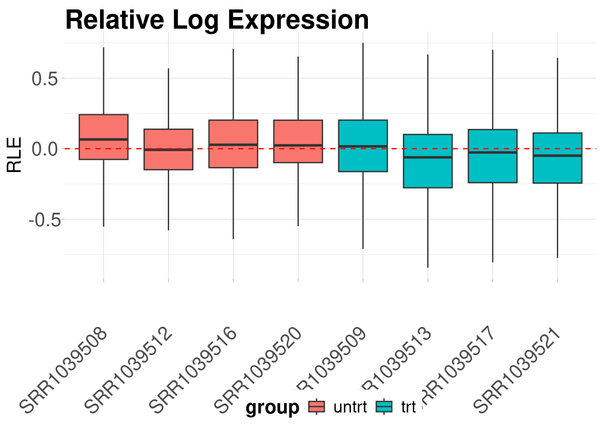
We can see from the above RLE plot that the samples are centered around zero and have mostly similar distributions. It is also clear that two of the samples, “SRR1039520” and “SRR1039521”, have slightly different distributions than the others.
Library density plots
Library density plots show the density of reads corresponding to a particular magnitude of counts. Shifts of these curves should align with group differences and generally samples from the same group should have overlapping density curves
plot_density(logcounts, metadata = y$samples, colBy = "group") +
labs(title = "Library Densities",
x = "logCPM",
y = "Density",
color = "Treatment Group")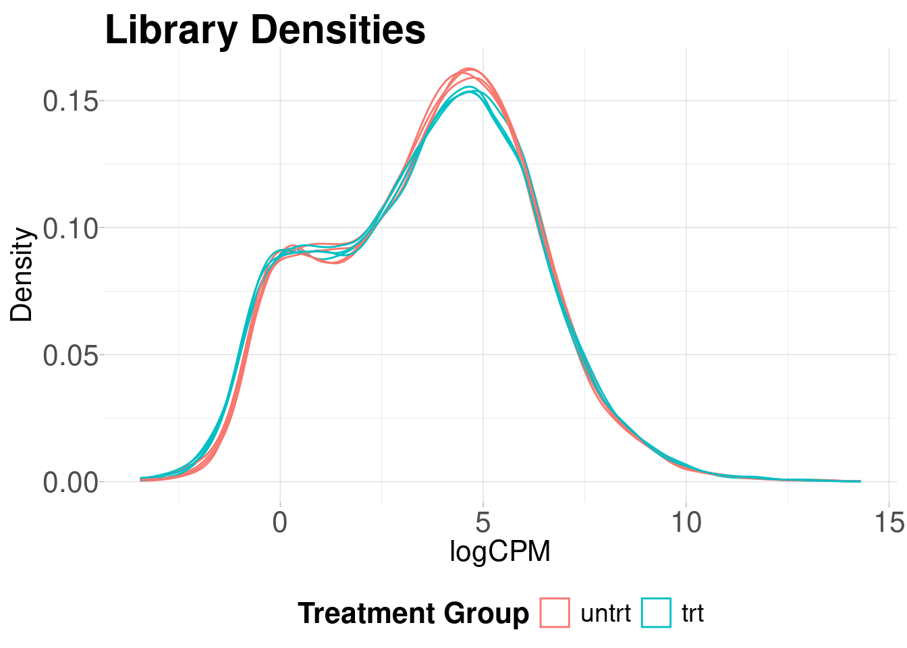
Sample vs Sample Distances
We can also calculate the euclidean distance between all pairs of samples and display this on a heatmap. Again, samples from the same group should show smaller distances than sample pairs from differing groups.
plot_dist(logcounts, metadata = y$samples[, "group", drop = FALSE])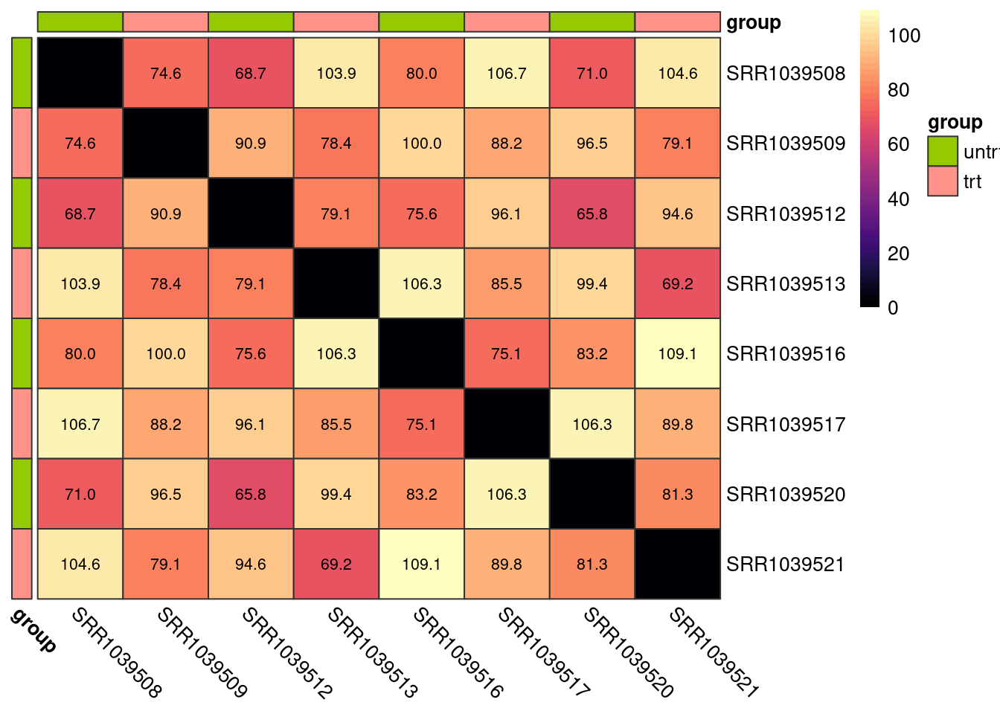
Parallel coordinates plot
Parallel coordinates plots are useful for giving you an idea of how the most variable genes change between treatment groups. These plots show the expression of each gene as a line on the y-axis traced between samples on the x-axis.
plot_parallel(logcounts, y$samples, colBy = "group",
removeVar = 0.9, alpha = 0.05) +
labs(title = "10% Most Variable Genes",
x = "Sample",
y = "logCPM",
color = "Treatment Group")Removing 90% lowest variance features...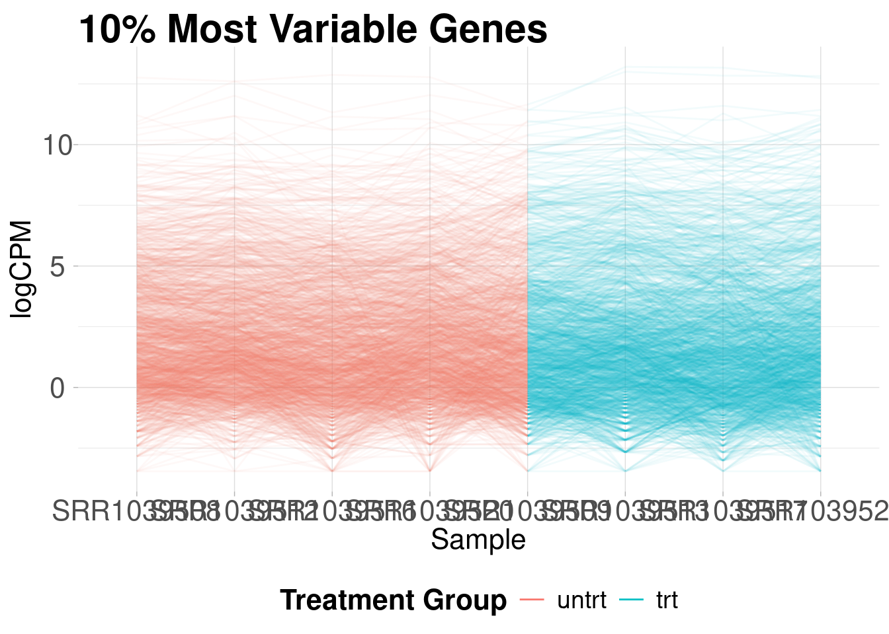
Correlations between samples
We can also plot the pairwise correlations between all samples. These plots can be useful for identifying technical replicates that deviate from the group
plot_cor_pairs(logcounts, cex_labels = 1)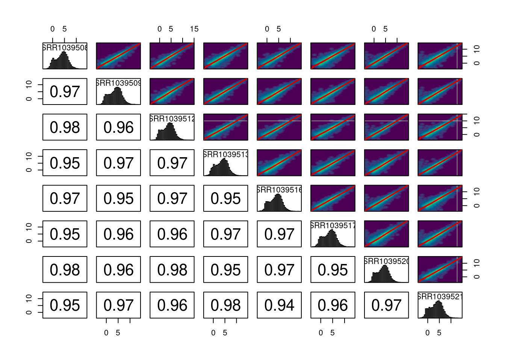
PCA
Principal components analysis is an unsupervised method for reducing the dimensionality of a dataset while maintaining its fundamental structure. PCA biplots can be used to examine sample groupings following PCA. These biplots can reveal overall patterns of expression as well as potential problematic samples prior to downstream analysis. For simple analyses we expect to see the ‘main’ effect primarily along the first component.
I like to use the PCAtools package for quickly computing and plotting principal components. For more complicated experiments I have also found UMAP (see coriell::UMAP()) to be useful for dimensionality reduction (although using UMAP is not without its problems for biologists).
library(PCAtools)
# Perform PCA on the 20% most variable genes
# Center and scale the variable after selecting most variable
pca_result <- pca(
logcounts,
metadata = y$samples,
center = TRUE,
scale = TRUE,
removeVar = 0.8
)
# Show the PCA biplot
biplot(
pca_result,
colby = "group",
hline = 0,
vline = 0,
hlineType = 2,
vlineType = 2,
legendPosition = "bottom",
title = "PCA",
caption = "20% Most Variable Features"
)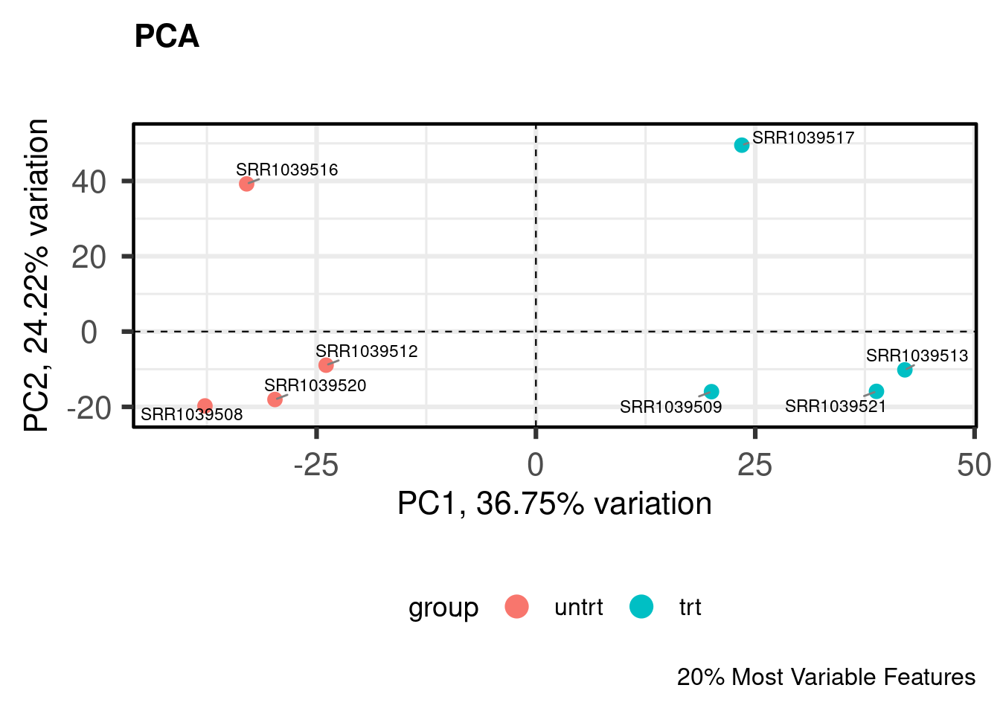
Assessing global scaling normalization assumptions
Most downstream differential expression testing methods apply a global scaling normalization factor to each library prior to DE testing. Applying these normalization factors when there are global expression differences can lead to spurious results. In typical experiments this is usually not a problem but when dealing with cancer or epigenetic drug treatment this can actually lead to many problems if not identified.
To identify potential violations of global scaling normalization I use the quantro R package. quantro uses two data driven approaches to assess the appropriateness of global scaling normalization. The first involves testing if the medians of the distributions differ between groups. These differences could indicate technical or real biological variation. The second test assesses the ratio of between group variability to within group variability using a permutation test similar to an ANOVA. If this value is large, it suggests global adjustment methods might not be appropriate.
library(quantro)
# Initialize multiple (8) cores for permutation testing
doParallel::registerDoParallel(cores = 8)
# Compute the qstat on the filtered libraries
qtest <- quantro(y$counts, groupFactor = y$samples$group, B = 500)Now we can assess the results. We can use anova() to test for differences in medians across groups. Here, they do not significantly differ.
anova(qtest)Analysis of Variance Table
Response: objectMedians
Df Sum Sq Mean Sq F value Pr(>F)
groupFactor 1 1984.5 1984.5 0.3813 0.5596
Residuals 6 31225.5 5204.3 We can also plot the results of the permutation test to see the between:within group ratios. Again, there are no large differences in this dataset suggesting that global scaling normalization such as TMM is appropriate.
quantroPlot(qtest)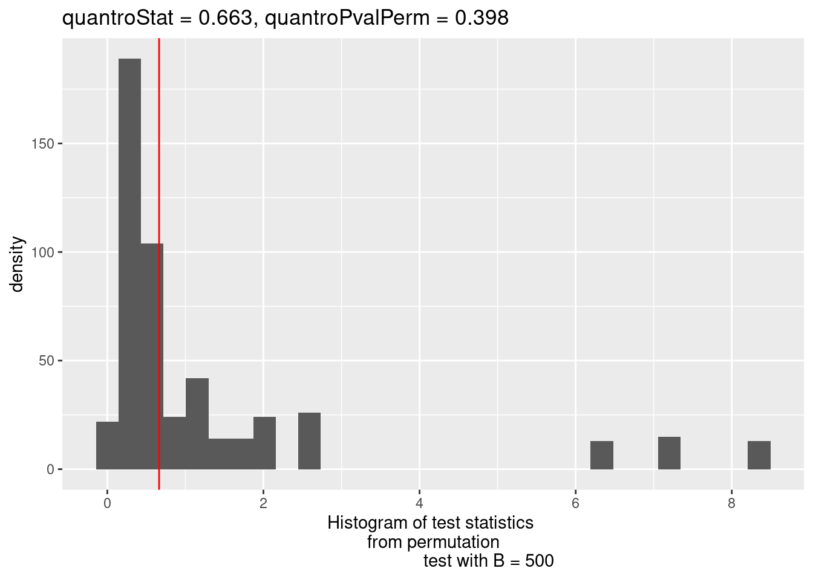
Differential expression testing with edgeR
After removing lowly expressed features and checking the assumptions of normalization we can perform downstream differential expression testing with edgeR. The edgeR manual contains a detailed explanation of all steps involved in differential expression testing.
In short, we need to specify the experimental design, estimate normalization factors, fit the models, and perform DE testing.
Creating the experimental design
Maybe the most important step in DE analysis is properly constructing a design matrix. The details of design matrices are outside of the scope of this tutorial but a good overview can be found here. Generally, your samples will fall nicely into several well defined groups, facilitating the use of a design matrix without an intercept e.g. design ~ model.matrix(~0 + group, ...). This kind of design matrix makes it relatively simple to construct contrasts that describe exactly what pairs of groups you want to compare.
Since this example experiment is simply comparing treatments to control samples we can model the differences in means by using a model with an intercept where the intercept is the mean of the control samples and the 2nd coefficient represents the differences in the treatment group.
# Model with intercept
design <- model.matrix(~group, data = y$samples)We can make an equivalent model and test without an intercept like so:
# A means model
design_no_intercept <- model.matrix(~0 + group, data = y$samples)
# Construct contrasts to test the difference in means between the groups
cm <- makeContrasts(
Treatment_vs_Control = grouptrt - groupuntrt,
levels = design_no_intercept
)The choice of which design is up to you. I typically use whatever is clearer for the experiment at hand. In this case, that is the model with an intercept.
Estimating normalization factors
We use edgeR to calculate trimmed mean of the M-value (TMM) normalization factors for each library.
# Estimate TMM normalization factors
y <- normLibSizes(y)We can check the normalization by creating MA plots for each library. The bulk of the data should be centered on zero without any obvious differences in the logFC as a function of average abundance.
par(mfrow = c(2, 4))
for (i in 1:ncol(y)) {
plotMD(cpm(y, log = TRUE), column = i)
abline(h = 0, lty = 2, col = "red2")
}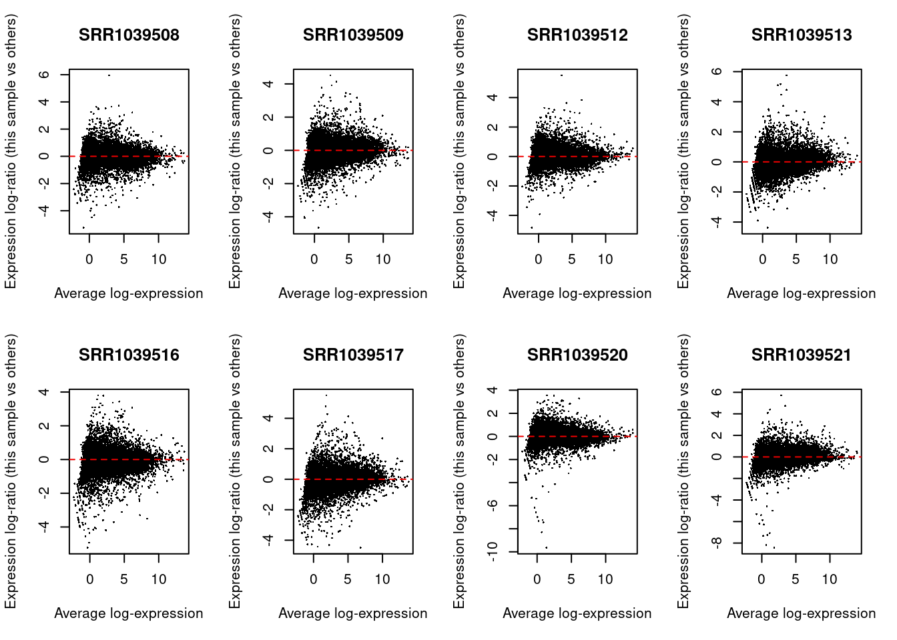
What to do if global scaling normalization is violated?
Above I described testing for violations of global scaling normalization. So what should we do if these assumptions are violated and we don’t have a good set of control genes or spike-ins etc.?
If we believe that the differences we are observing are due to true biological phenomena (this is a big assumption) then we can try to apply a method such as smooth quantile normalization to the data using the qsmooth package.
Below I will show how to apply qsmooth to our filtered counts and then calculate offsets to be used in downstream DE analysis with edgeR. Please note this is not a benchmarked or ‘official’ workflow just a method that I have implemented based on reading forums and github issues.
library(qsmooth)
# Compute the smooth quantile factors
qs <- qsmooth(y$counts, group_factor = y$samples$group)
# Extract the qsmooth transformed data
qsd <- qsmoothData(qs)
# Calculate offsets to be used by edgeR in place of norm.factors
# Offsets are on the natural log scale. Add a small offset to avoid
# taking logs of zero
offset <- log(y$counts + 0.1) - log(qsd + 0.1)
# Scale the offsets for internal usage by the DGEList object
# Now the object is ready for downstream analysis
y <- scaleOffset(y, offset = offset)
# To create logCPM values with the new norm factors use
lcpm <- cpm(y, offset = y$offset, log = TRUE)Fit the model
New in edgeR 4.0 is the ability to estimate dispersions while performing the model fitting step. I typically tend to ‘robustify’ the fit to outliers. Below I will perform dispersion estimation in legacy mode so that we can use competitive gene set testing later. If we want to use the new workflow we can use the following:
# edgeR 4.0 workflow
fit <- glmQLFit(y, design, legacy = FALSE, robust = TRUE)We will continue with the legacy workflow.
y <- estimateDisp(y, design, robust = TRUE)
fit <- glmQLFit(y, design, robust = TRUE, legacy = TRUE)It’s always a good idea at this step to check some of the diagnostic plots from edgeR
# Show the biological coefficient of variation
plotBCV(y)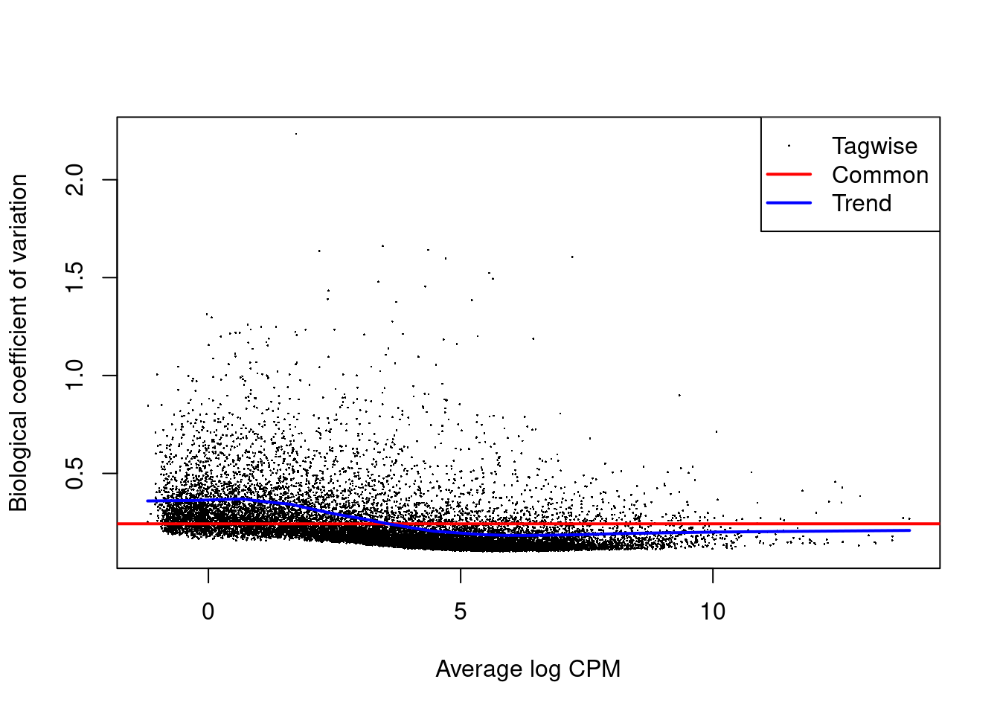
# Show the dispersion estimates
plotQLDisp(fit)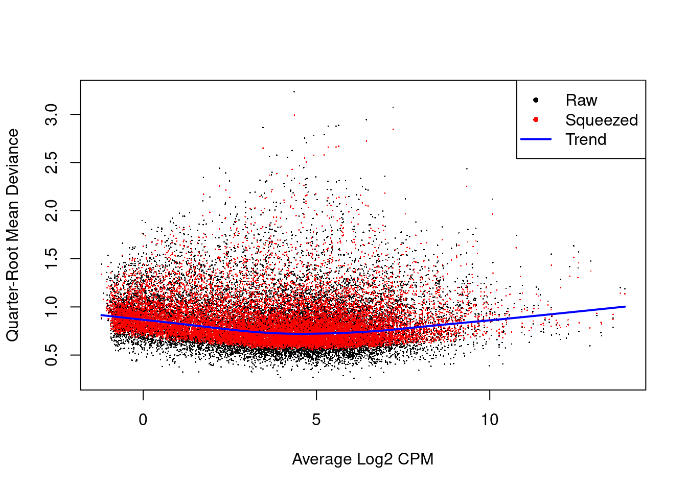
Test for differential expression
Now that the models have been fit we can test for differential expression.
# Test the treatment vs control condition
qlf <- glmQLFTest(fit, coef = 2)Often it is more biologically relevant to give more weight to higher fold changes. This can be achieved using glmTreat(). NOTE do not use glmQLFTest() and then filter by fold-change - you destroy the FDR correction!
When testing against a fold-change we can use relatively modest values since the fold-change must exceed this threshold before being considered for significance. Values such as log2(1.2) or log2(1.5) work well in practice.
trt_vs_control_fc <- glmTreat(fit, coef = 2, lfc = log2(1.2))In any case, the results of the differential expression test can be extracted to a data.frame for downstream plotting with coriell::edger_to_df(). This function simply returns a data.frame of all results from the differential expression object in the same order as y. (i.e. topTags(..., n=Inf, sort.by="none"))
de_result <- edger_to_df(qlf)Plotting DE results
The two most common plots for differential expression analysis results are the volcano plot and the MA plot. Volcano plots display the negative log10 of the significance value on the y-axis vs the log2 fold-change on the x-axis. MA plots show the average expression of the gene on the x-axis vs the log2 fold-change of the gene on the y-axis. The coriell package includes functions for producing both.
library(patchwork)
# Create a volcano plot of the results
v <- plot_volcano(de_result, fdr = 0.05)
# Create and MA plot of the results
m <- plot_md(de_result, fdr = 0.05)
# Patch both plots together
(v | m) +
plot_annotation(title = "Treatment vs. Control") &
theme_coriell()
The coriell package also has a function for quickly producing heatmaps with nice defaults for RNA-seq. Sometimes it’s useful to show the heatmaps of the DE genes.
# Compute logCPM values after normalization
lcpm <- cpm(y, log = TRUE)
# Determine which of the genes in the result were differentially expressed
is_de <- de_result$FDR < 0.05
# Produce a heatmap from the DE genes
quickmap(
x = lcpm[is_de, ],
metadata = y$samples[, "group", drop = FALSE],
main = "Differentially Expressed Genes"
)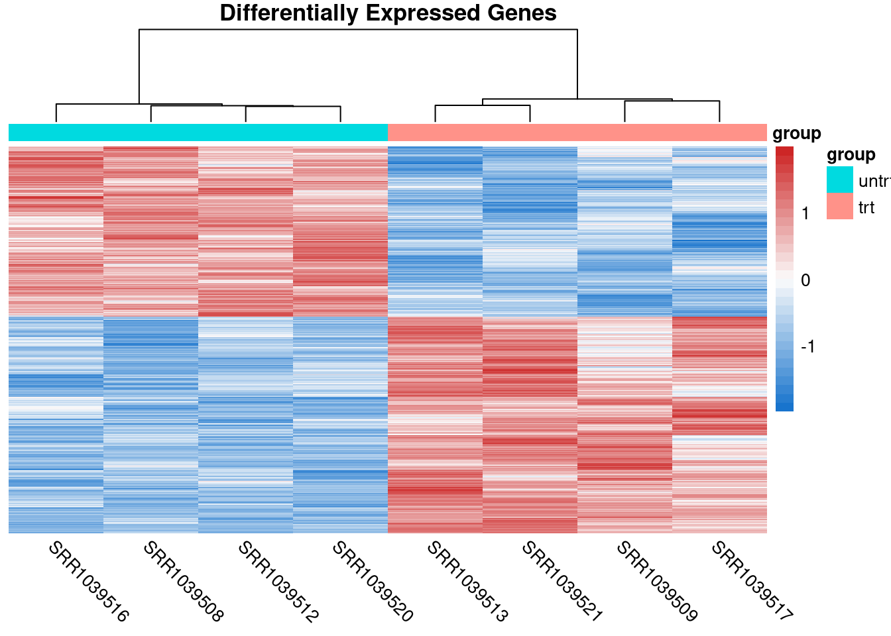
Competitive gene set testing with camera()
I’ve recently become aware of some of the problems with gene set enrichment analysis using the fgsea package. Following Gordon Smyth’s advice, I have switched all of my pipelines to using competitive gene set testing (when appropriate) in limma to avoid problems with correlated genes.
Below we use the msigdbr R package to retrieve HALLMARK gene sets and then use edgeR::camera() for gene set testing.
library(msigdbr)
# Get the HALLMARK gene set data
msigdb_hs <- msigdbr(species = "Homo sapiens", category = "H")Warning: The `category` argument of `msigdbr()` is deprecated as of msigdbr 10.0.0.
ℹ Please use the `collection` argument instead.# Split into list of gene names per HALLMARK pathway
msigdb_hs <- split(as.character(msigdb_hs$gene_symbol), msigdb_hs$gs_name)
# Convert the gene sets into lists of indeces for edgeR
idx <- ids2indices(gene.sets = msigdb_hs, identifiers = y$genes$gene_name)Perform gene set testing. Note here we can use camera() mroast(), or romer() depending on the hypothesis being tested. The above setup code provides valid input for all of the above functions.
See this comment from Aaron Lun describing the difference between camera() and roast(). For GSEA like hypothesis we can use romer()
roast()performs a self-contained gene set test, where it looks for any DE within the set of genes.camera()performs a competitive gene set test, where it compares the DE within the gene set to the DE outside of the gene set.
# Use camera to perform competitive gene set testing
camera_result <- camera(y, idx, design, contrast = 2)
# Use mroast for rotational gene set testing - bump up number of rotations
mroast_result <- mroast(y, idx, design, contrast = 2, nrot = 1e4)
# Use romer for GSEA like hypothesis testing
romer_result <- romer(y, idx, design, contrast = 2)We can also perform a pre-ranked version of the camera test using cameraPR(). To use the pre-ranked version we need to create a ranking statistic. The suggestion from Gordon Smyth is to derive a z-statistic from the F-scores like so:
t_stat <- sign(de_result$logFC) * sqrt(de_result$`F`)
z <- zscoreT(t_stat, df = qlf$df.total)
# Name the stat vector with the gene names
names(z) <- de_result$gene_name
# Use the z-scores as the ranking stat for cameraPR
camera_pr_result <- cameraPR(z, idx)Another useful plot to show following gene set testing is a barcodeplot. We The barcodeplot displays the enrichment of a given signature for a ranked list of genes. The limma::barcodeplot() function allows us to easily create these plots for any of the gene sets of interest using any ranking stat of our choice.
# Show barcodeplot using the z-scores
barcodeplot(
z,
index = idx[["HALLMARK_ANDROGEN_RESPONSE"]],
main = "HALLMARK_ANDROGEN_RESPONSE",
xlab = "z-score"
)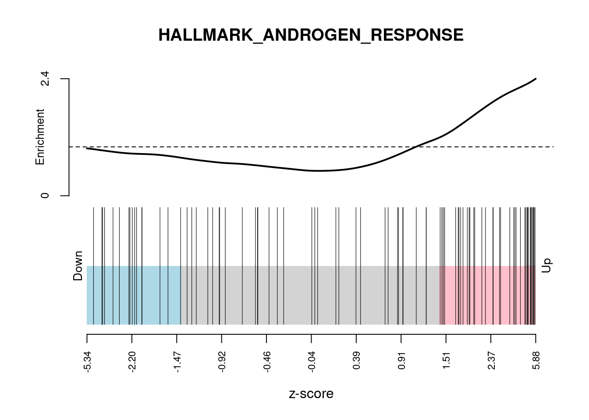
# Or you can use the logFC
barcodeplot(
de_result$logFC,
index = idx[["HALLMARK_ANDROGEN_RESPONSE"]],
main = "HALLMARK_ANDROGEN_RESPONSE",
xlab = "logFC"
)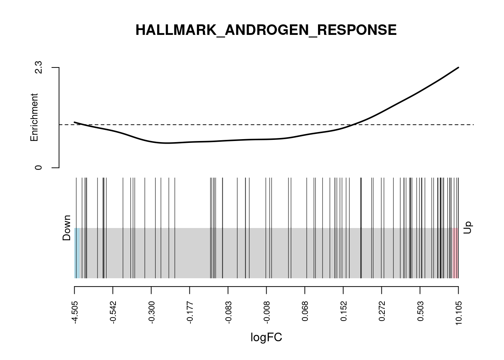
Gene ontology (GO) over-representation test
Over-representation analysis can be performed with the clusterProfiler package. Here, instead of using the entire gene list as input we select separate sets of up and down-regulated genes and test to see if these sets are enriched in our differentially expressed gene list.
library(clusterProfiler)
library(org.Hs.eg.db)
# Split the genes into up and down
up_genes <- subset(
de_result,
FDR < 0.05 & logFC > 0,
"gene_name",
drop = TRUE
)
down_genes <- subset(
de_result,
FDR < 0.05 & logFC < 0,
"gene_name",
drop = TRUE
)
# Extract the list of all genes expressed in the experiment
# to use as a background set
universe <- unique(y$genes$gene_name)Create results objects for each set of genes
ego_up <- enrichGO(
gene = up_genes,
universe = universe,
OrgDb = org.Hs.eg.db,
keyType = "SYMBOL",
ont = "ALL",
pAdjustMethod = "BH",
pvalueCutoff = 0.01,
qvalueCutoff = 0.05,
readable = TRUE
)
ego_down <- enrichGO(
gene = down_genes,
universe = universe,
OrgDb = org.Hs.eg.db,
keyType = "SYMBOL",
ont = "ALL",
pAdjustMethod = "BH",
pvalueCutoff = 0.01,
qvalueCutoff = 0.05,
readable = TRUE
)These results can be converted to data.frames and combined with:
ego_up_df <- data.frame(ego_up)
ego_down_df <- data.frame(ego_down)
ego_df <- data.table::rbindlist(
list(up = ego_up_df, down = ego_down_df),
idcol = "Direction"
)Or the results can be plotted as dotplots with:
d1 <- dotplot(ego_up) + labs(title = "Up-regulated genes")
d2 <- dotplot(ego_down) + labs(title = "Down-regulated genes")
d1 | d2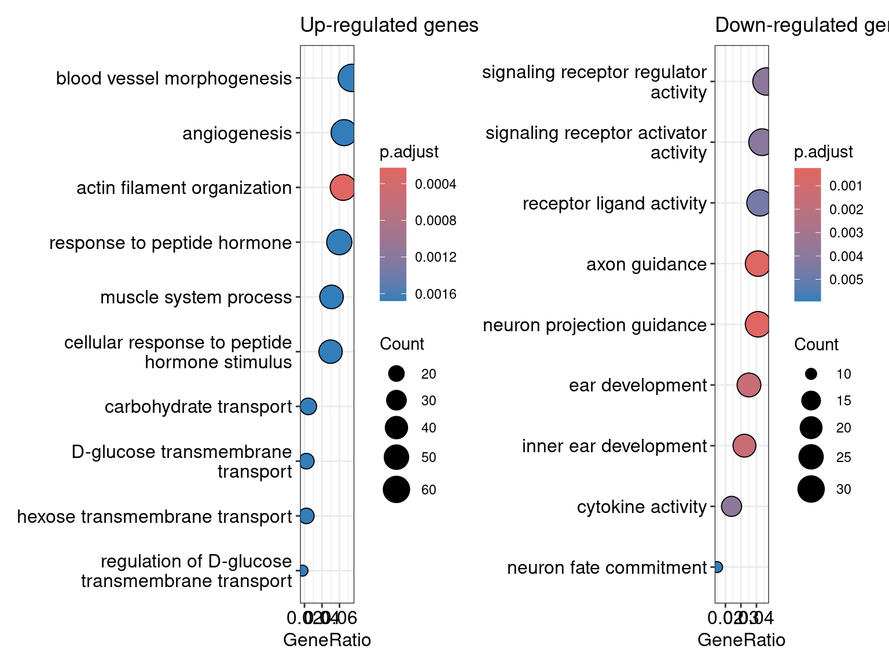
You can also create a nice enrichment map showing similarity between the significant GO terms like so:
em_up <- enrichplot::pairwise_termsim(ego_up)
em_down <- enrichplot::pairwise_termsim(ego_down)
p1 <- enrichplot::emapplot(em_up, showCategory = 10, min_edge = 0.5) +
labs(title = "Up-regulated genes")
p2 <- enrichplot::emapplot(em_down, showCategory = 10, min_edge = 0.5) +
labs(title = "Down-regulated genes")
p1 | p2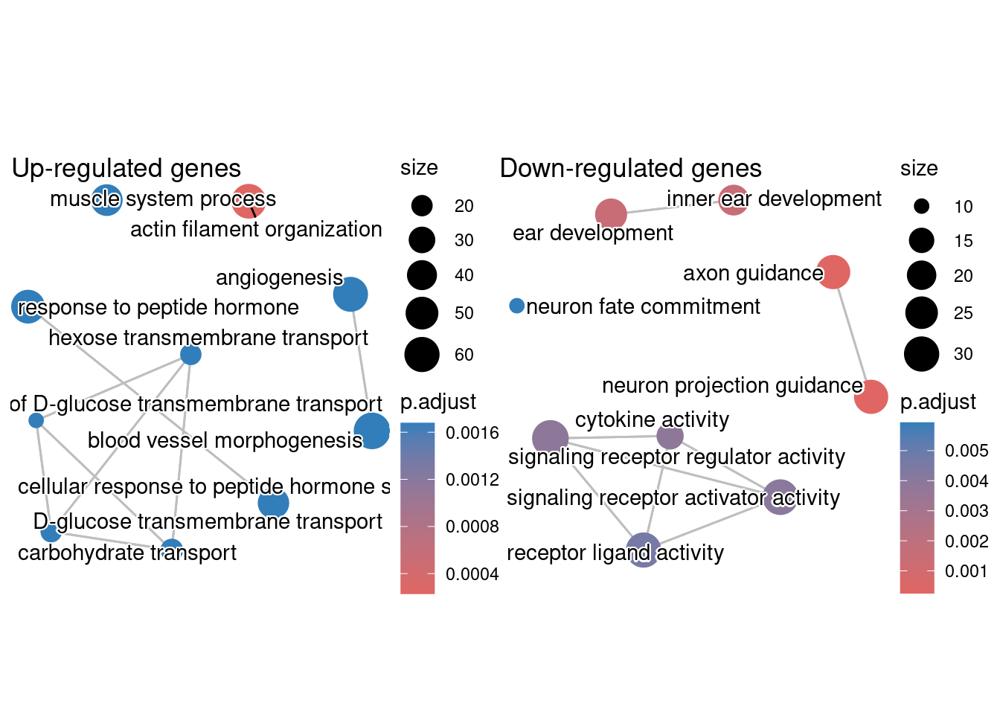
Session Info
sessionInfo()R version 4.5.1 (2025-06-13)
Platform: x86_64-pc-linux-gnu
Running under: Pop!_OS 22.04 LTS
Matrix products: default
BLAS: /usr/lib/x86_64-linux-gnu/openblas-pthread/libblas.so.3
LAPACK: /usr/lib/x86_64-linux-gnu/openblas-pthread/libopenblasp-r0.3.20.so; LAPACK version 3.10.0
locale:
[1] LC_CTYPE=en_US.UTF-8 LC_NUMERIC=C
[3] LC_TIME=en_US.UTF-8 LC_COLLATE=en_US.UTF-8
[5] LC_MONETARY=en_US.UTF-8 LC_MESSAGES=en_US.UTF-8
[7] LC_PAPER=en_US.UTF-8 LC_NAME=C
[9] LC_ADDRESS=C LC_TELEPHONE=C
[11] LC_MEASUREMENT=en_US.UTF-8 LC_IDENTIFICATION=C
time zone: America/New_York
tzcode source: system (glibc)
attached base packages:
[1] stats4 stats graphics grDevices datasets utils methods
[8] base
other attached packages:
[1] org.Hs.eg.db_3.21.0 AnnotationDbi_1.70.0
[3] clusterProfiler_4.16.0 msigdbr_25.1.1
[5] patchwork_1.3.1 quantro_1.40.0
[7] PCAtools_2.20.0 ggrepel_0.9.6
[9] coriell_0.17.0 ggplot2_3.5.2
[11] edgeR_4.6.3 limma_3.64.1
[13] airway_1.28.0 SummarizedExperiment_1.38.1
[15] Biobase_2.68.0 GenomicRanges_1.60.0
[17] GenomeInfoDb_1.44.1 IRanges_2.42.0
[19] S4Vectors_0.46.0 BiocGenerics_0.54.0
[21] generics_0.1.4 MatrixGenerics_1.20.0
[23] matrixStats_1.5.0
loaded via a namespace (and not attached):
[1] splines_4.5.1 BiocIO_1.18.0
[3] ggplotify_0.1.2 bitops_1.0-9
[5] R.oo_1.27.1 tibble_3.3.0
[7] preprocessCore_1.70.0 XML_3.99-0.18
[9] lifecycle_1.0.4 doParallel_1.0.17
[11] lattice_0.22-7 MASS_7.3-65
[13] base64_2.0.2 scrime_1.3.5
[15] magrittr_2.0.3 minfi_1.54.1
[17] rmarkdown_2.29 yaml_2.3.10
[19] ggtangle_0.0.7 doRNG_1.8.6.2
[21] askpass_1.2.1 cowplot_1.2.0
[23] DBI_1.2.3 RColorBrewer_1.1-3
[25] abind_1.4-8 quadprog_1.5-8
[27] R.utils_2.13.0 purrr_1.1.0
[29] RCurl_1.98-1.17 yulab.utils_0.2.0
[31] GenomeInfoDbData_1.2.14 enrichplot_1.28.2
[33] irlba_2.3.5.1 tidytree_0.4.6
[35] rentrez_1.2.4 genefilter_1.90.0
[37] pheatmap_1.0.13 annotate_1.86.1
[39] dqrng_0.4.1 DelayedMatrixStats_1.30.0
[41] codetools_0.2-20 DelayedArray_0.34.1
[43] DOSE_4.2.0 xml2_1.3.8
[45] tidyselect_1.2.1 aplot_0.2.8
[47] UCSC.utils_1.4.0 farver_2.1.2
[49] ScaledMatrix_1.16.0 beanplot_1.3.1
[51] illuminaio_0.50.0 GenomicAlignments_1.44.0
[53] jsonlite_2.0.0 multtest_2.64.0
[55] survival_3.8-3 iterators_1.0.14
[57] foreach_1.5.2 tools_4.5.1
[59] treeio_1.32.0 Rcpp_1.1.0
[61] glue_1.8.0 SparseArray_1.8.0
[63] xfun_0.52 qvalue_2.40.0
[65] dplyr_1.1.4 HDF5Array_1.36.0
[67] withr_3.0.2 fastmap_1.2.0
[69] rhdf5filters_1.20.0 openssl_2.3.3
[71] digest_0.6.37 rsvd_1.0.5
[73] gridGraphics_0.5-1 R6_2.6.1
[75] colorspace_2.1-1 GO.db_3.21.0
[77] RSQLite_2.4.2 R.methodsS3_1.8.2
[79] h5mread_1.0.1 tidyr_1.3.1
[81] data.table_1.17.8 rtracklayer_1.68.0
[83] httr_1.4.7 htmlwidgets_1.6.4
[85] S4Arrays_1.8.1 pkgconfig_2.0.3
[87] gtable_0.3.6 rdist_0.0.5
[89] blob_1.2.4 siggenes_1.82.0
[91] XVector_0.48.0 htmltools_0.5.8.1
[93] fgsea_1.34.2 scales_1.4.0
[95] png_0.1-8 ggfun_0.2.0
[97] knitr_1.50 rstudioapi_0.17.1
[99] tzdb_0.5.0 reshape2_1.4.4
[101] rjson_0.2.23 nlme_3.1-168
[103] curl_6.4.0 bumphunter_1.50.0
[105] cachem_1.1.0 rhdf5_2.52.1
[107] stringr_1.5.1 KernSmooth_2.23-26
[109] parallel_4.5.1 restfulr_0.0.16
[111] GEOquery_2.76.0 pillar_1.11.0
[113] grid_4.5.1 reshape_0.8.10
[115] vctrs_0.6.5 BiocSingular_1.24.0
[117] beachmat_2.24.0 xtable_1.8-4
[119] evaluate_1.0.4 readr_2.1.5
[121] GenomicFeatures_1.60.0 cli_3.6.5
[123] locfit_1.5-9.12 compiler_4.5.1
[125] Rsamtools_2.24.0 rlang_1.1.6
[127] crayon_1.5.3 rngtools_1.5.2
[129] labeling_0.4.3 nor1mix_1.3-3
[131] mclust_6.1.1 fs_1.6.6
[133] plyr_1.8.9 stringi_1.8.7
[135] viridisLite_0.4.2 BiocParallel_1.42.1
[137] assertthat_0.2.1 babelgene_22.9
[139] Biostrings_2.76.0 lazyeval_0.2.2
[141] bspm_0.5.7 GOSemSim_2.34.0
[143] Matrix_1.7-3 hms_1.1.3
[145] sparseMatrixStats_1.20.0 bit64_4.6.0-1
[147] Rhdf5lib_1.30.0 KEGGREST_1.48.1
[149] statmod_1.5.0 igraph_2.1.4
[151] memoise_2.0.1 ggtree_3.16.2
[153] fastmatch_1.1-6 bit_4.6.0
[155] gson_0.1.0 ape_5.8-1